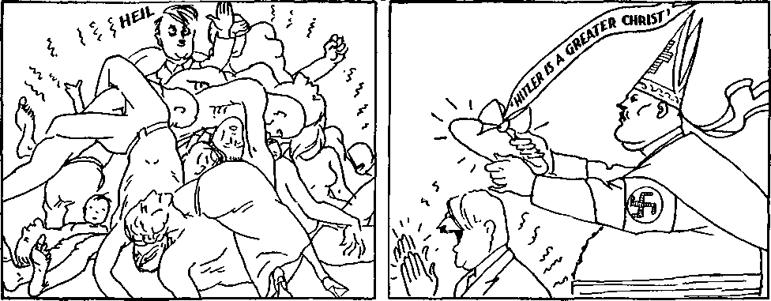
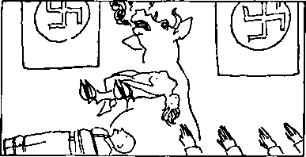
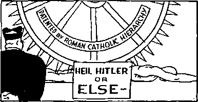
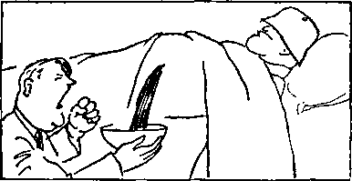

Read some of our Government subsidized Communist propaganda and get arrested
iiiiiiiimiiiiiiiiiiiiiiiiiiiiiiiiiiiiimiiiiiiiiiiiiiiiiiiiiiiiiiiiiiiiiimi
in this issue
iiiiiiiiiiiiiiiiiiiiiiiiiiiiiiiiiiiiiiiiiiiiiiiiiiiiiiiiiiiiiiiiiiiiiiiiiiiiiiii
every other WEDNESDAY
five cents d, copy one dollar a year Canada & Foreign 1.25
Vol. XVIII-No. 456
March 10,1937
••eKe).'
CONTENTS
“O^G). — .... —■ ,. , ■ —»Q>-rfc •»
Hierarchy Wins “Peace and
Tremendous Propaganda
Cardinal Faulhaber, Contact Man 356
Where Hitler First Saw Swastika 358
The Cause of Hitler’s Insanity 361 His Responsibility
Methods of Torturing Women 365 No Faintest Resemblance
Signs of Protestant Dissolution
Violence to Jehovah’s witnesses
A Few of the Thousands
Persecutions Traced to Priests
Tortured by Revived Inquisition
18,000 Sign Petition in Trinidad
Central America and West Indies 377
Letters Received at Paris Office 378
Obedience Gives Power with God 379
To the Faithful in All the Earth 382
Cartoons and Illustrations
“They give gifts to all whores ...” 355
Benito, Ambrose, Adolph, Frankie
Vaccinating the Younger Set Against
Liberty, Equality and Christianity
Travel Folder Advertising Scenic
Jehovah can put a man on earth who
‘‘Him that overcometh will I make
a pillar in the temple of my God;
and he shall go no more out.” 373
. • ----— ----------------- ©Hs »•
Published every other Wednesday by
GOLDEN AGE PUBLISHING COMPANY, INC.
117 Adams Street, Brooklyn, N. Y., U. S. A.
Clayton J. Woodworth President Nathan H. Knorr Vice President
Charles E. Wagner Secretary and, Treasurer
FIVE CENTS A COPY
$1 a year, United States; $1.25 to Canada and all other countries.
Notice to Subscribers
Remittances : For your own safety, remit by postal or express money order. When coin or currency is lost in the ordinary mails, there is no redress. Remittances from countries other than those named below may be made to the Brooklyn office, but only by international postal money order.
Receipt of a new or renewal subscription will be acknowledged only when requested. Notice of expiration is sent with the journal one month before subscription expires. Please renew promptly to avoid loss of copies.
Seno change of address direct to ns rather than to the post office. Your request should reach us at least two weeks before the date of issue with which it is to taka effect. Send your old as well as the new address. Copies will not be forwarded by the post office to your new address unless extra postage is provided by you.
Published also in Bohemian, Danish, Dutch, Finnish, French. German, Greek, Japanese, Norwegian, Polish, Spanish, Swedish.
British Canadian Australasian
South African
Entered as second-class
Offices for Other Countbibs
34 Craven Terrace, London, W. 2, England
40 Irwin Avenue, Toronto 5, Ontario, Canada
7 Beresford Road. Strathfield, N. S. W„ Australia Boston House, Cape Town, South Africa matter at Brooklyn, N. Y., under the Act of March 3, 1879.
• gXI"
Volume XVIII Brooklyn, N.Y., Wednesday, March 10, 1937 Number 456
Hierarchy Wins “Peace and Safety” in Germany
THE Roman Hierarchy has won such a complete victory in Germany that everybody in the country is virtually compelled to vote for Hitler or lose his means of making a livelihood.
Not only is it generally true that “once a Catholic, always a Catholic”, but the Hierarchy is more and more openly backing the German dictator and he is more and more yielding to the voice of Rome.
“They give gifts to all whores; but thou givest thy gifts to all thy lovers, and hirest them, that they may come unto thee on every side for thy whoredom. And the contrary is in thee from other women in thy whoredoms, whereas none followeth thee to commit whoredoms: and in that thou givest a reward, and no reward is given unto thee; therefore thou art contrary.’’— Ezekiel 16: 33,34.
At the last election all industrial leaders in the country received orders from the Nazis (Hitler’s party of Catholic Action) to discharge all who refused to go to the polls. In case they went and voted blank ballots, the blanks were counted as being for Hitler. At that election Catholic churches throughout Germany were ordered to have their congregations vote for Hitler. The methods of dominating actual or ostensible republics is now so well understood by the Hierarchy that out of 44,954,937 ballots cast, 44,411,911 were for Hitler. That is 98.8 percent, and fairly represents the grip that the Roman Catholic Hierarchy has on Germany at this moment.
Immediately after the election there began to be hints that Hitler was no longer anxious to have it appear that there is discord between himself and the Roman curia at Vatican City. It will be recalled that before that time there had been numerous arrests of prelates and others for smuggling funds out of the country. Note now the following from the New York Times of December 1, 1936:
Dr. Wilhelm Soppa, Vicar General of the Diocese of Meissen, who was sent to the penitentiary last year charged with exchange violations for his diocese, has been released after serving only a quarter of his four-year term. The Bishop of Meissen’s brother, Dr. Theodore Legge, sentenced to three years in the penitentiary, also was released. A number of Rhineland monks and nuns imprisoned on like charges were also released.
As early as April 8, 1936, it was announced in Bremen that all lawsuits in the province of Baden, with the exception of criminal suits, had been dropped, and in the Weser-Zeitung the Minister of Education advanced the hope and expectation that the clergy would appreciate this friendly move.
To get the Hierarchy at a political disadvantage the German government instituted suits against 200 Franciscan friars from the Rhineland and Westphalia for immoral offenses against male minors entrusted to their care;
61 more fled to The Netherlands to escape trial. The cabled account stated that these unprintable offenses between the gowned and “Reverend” hypocrites and their pupils were maintained in every settlement maintained by the two orders in the Rhineland and Westphalia.
A dispatch from Vatican City, published in the New York Herald Tribune, stated that Mussolini had intervened with the Vatican and that the vice trials would be dropped. This was not unlikely. Mussolini, once referring to the pope as “the bloody old wolf of the Vatican”, is now, for policy’s sake, an apparently ardent Roman Catholic, wearing beads, crosses and other junk. He is also obligated to the Vatican for assistance financially in the Ethiopian campaign.
While Hitler’s announced plans against the sex perverts was under way the Hierarchy was on a hot spot. They tried to claim that to get their evidence against the Franciscans the Nazis had planted prostitutes in the monasteries; but that did not explain the flight of 61 of the accused friars to other lands, nor account for the plea of guilty, with a penalty of eight years in prison, for the very first friar placed on trial.
Some of the headlines, as published in the New York Times, give an idea of the conditions actually existing in these hellholes:
Priest Sentenced to 8 Years in Reich; Also Deprived of Civil Rights for Five Years on Charges of 45 Moral Offenses. Friar Gets a Long Term. Two Former Leaders of Young Catholic Organization Are Found Guilty by Court.
Reich Sentences More Catholics. Ratibor Priest Gets 15 Months on Charge Involving Girl, 15, Whose Confessor He Was. Coblenz Trial Continues. Ex-Francis-can Friar Jailed for 3 Years After Conviction in 16 Cases of Immorality.
The evidence in these cases showed that even when the conditions in the monastery were twice reported to the bishop of Trier he did nothing to correct them.
At the time the excitement was on the Nazi papers demanded the end of this imaginary celibacy between priests, monks and nuns, and some of the statisticians figured out how many more soldiers could be produced if all were married (and the quick-lime pits for infants abolished).
At length Hitler, as a “Practical Catholic”, ordered all prosecution of the monks and nuns for their disgraceful and immoral practices to cease. The German bishops then came out with a statement that the Franciscans who had been on trial for immoral conduct at Coblenz were laymen, and not priests. Had they desired to do so, they could have gone on to explain that the monks are merely so-called “brothers” of the “church”, and, as a matter of fact, none are members of the Catholic “Church” except the priests and bishops, archbishops, cardinals and popes. It is a thin excuse.
The world has never before seen anything like the propaganda machinery now used by the Roman Catholic Hierarchy, and it is getting more and more efficient every day. The results of its studies are fully available for both Hitler and Mussolini. The great convention of the Nazis at Nuremberg was a case in point.
At intervals of five minutes more than 1,500 special trains from all parts of Germany bore 950,000 persons into Nuremberg to hear Herr Hitler make a bid for Papal support in his campaign to win over Czechoslovakia by lambasting the Russian republic.
Hitler’s speeches have often been broadcast in the United States, but no democratic spokesman’s remarks have ever been put on the German circuit. However, Mussolini’s speech of November 1, 1936, was broadcast over all German stations in Italian and afterwards translated. The full power of the Roman Catholic Hierarchy is behind both of these men, to make them as near gods on earth as is possible to do.
When the time came for the Hierarchy to let it be known that, under the guise of Nazism, they have seized the German republic, the contact man was Cardinal Faulhaber. The cardinal understood, all along, the part he was to play, and months before the trap was sprung he announced, speaking for himself as the archbishop of his archdiocese, “The archbishop is not aware that Der Fuehrer has ever withdrawn from the Catholic church.” He is listed as a Catholic in the German Who’s Who.
Under the title “Foe Who Calls on Hitler” the Associated Press has, in the New York Herald Tribune, a fine picture of Cardinal Faulhaber. Then follows about a column of the most perfect bunk ever put on the cables. In the midst of the story is the statement:
The meeting was a preparatory step toward a reconciliation between Hitler and the Vatican, a move which General von Epp is known to favor.
Why be so silly about the propaganda? Everybody in the United States knows that Hitler is a Catholic, Cardinal Faulhaber is a Catholic, and von Epp (governor of Bavaria) is a Catholic, and all three of them do what the pope wants them to do. The column story and the pretty picture of Faulhaber are all a part of the propaganda to feed Catholic Action, Fascism, Nazism, to the American people and make them like it, and the newspapers pass it on to the people apparently convinced that there is no bottom to the well and they can go on fooling the bulk of the people to the end of time.
At length came the planned and expected and certain “reconciliation” between Hitler and Faulhaber. There was a 3|-hour confab and love feast at which all was forgiven and forgotten, with opportunities for many a chuckle as to how the wool had been pulled over the people’s eyes, and then came the bishops’ pastoral letter glorifying the whole wicked conspiracy and advertising to all mankind that:
Der Fuehrer saw the onmarch of Bolshevism from afar and bent his mind and energies toward deflecting this terrible menace from our German people and the whole western world. The German bishops regard it as their duty to support with all means at their disposal the head of the German reich in this defensive struggle.
When Papal diplomats have agreed upon any set course, one of the first things they do is to contrive to publish or have something published to the effect that the contemplated thing has not been done and will not be done. Newspapermen recognize this as a set policy of the Hierarchy. Hence, just before the announcement that Hitler and the Hierarchy are in accord, came a dispatch from Berlin saying that Heinrich Himmler, chief of the Gestapo (Nazi secret police), has publicly renounced the religion of the Roman Catholic sect. This clumsy attempt to make it appear that there are any serious divergences between Hitler and the Roman cult only serves to make it clear that one of Hitler’s righthand men has been a Catholic all along. And without a doubt he is still one. The people in general are now wide awake to the Jesuitical methods of attracting sympathy and avoiding blame.
Crucifixes removed, as a bluff, from some of the schoolrooms in Oldenburg province, Germany, were replaced so that the Catholic peasants would come across better in giving up their grain to the government.
Hiding evidence of the Inquisition, the Hitler government is removing the spikes of the Nuremberg Iron Maiden, which spikes were once used to penetrate the eyes, heart and kidneys of those condemned to die within her shell.
The Associated Press in a dispatch from Berlin, dated January 2, 1937, made the self-evident admission:
The Nazi government of Germany and the Catholic Church gave signs today of a return to cordial relations, with communism as a common foe.
All the friction between the Nazi government and the Roman Hierarchy is pure camouflage, in which Hitler is an adept. At heart he is what is called a “Practical Catholic”, and can be depended upon to take orders from Rome on every important matter affecting the interests of the Roman Hierarchy. The Roman Hierarchy labels each and every enemy “Communist”, without discrimination, and for the same reason that it labels every independent thinker, speaker or writer a “Bigot”.
Adolf Hitler’s paternal grandmother, commonly called Maria Anna Sehicklgruber, was a harlot, and it is not certainly known, therefore, who was his grandfather paternal. On his mother’s side he apparently came of decent parents and grandparents.
Till he was 19 he wasted his time in school, and when his mother died he knew little. For years he made a precarious living fictitiously aging water colors on a warm hearth, to which he appended forged signatures of well-known artists, to make them appear old.
After four years as a corporal in the World War he returned to Munich, Bavaria, to become an anti-Soviet spy. His first success as a speaker was as a Jew-baiter, and this has been a feature of every address since. When misstatements were called in question by a rabbi he and his friends advertised that thenceforth no Jews would be admitted to hear him speak.
His rise to power was due to connivance and consent of the Bavarian police, who violated their oaths. He did not hesitate to put to death those who elevated him to power. Count Revent-low and others formally accused him of being “a satellite of Rome”. He confesses to guidance by an inner voice, which is demonism.
Like others on the inside, he knew, for years, that the guns Germany promised to destroy were stored for safe-keepjng in the cellars and granaries of the Bavarian monasteries, and eventually he had them brought forth and used them and boasted of them publicly.
At the Putsch in Munich he was the first to desert his comrade, Ludendorff, and flee. When imprisoned he threatened to starve himself to death. His trial was a disgrace to justice. Thus, he is of reprobate ancestry, a forger, spy, Jew-baiter, liar, traitor, demoniac and coward, a Catholic, and the idol of millions.
Hitler does not smoke, swear or drink. This Catholic “statesman”, and the Catholic “statesman” Mussolini, recognized the Catholic “statesman” General Franco on the same day. All are Fascists, i.e., representatives of Catholic Action.
Under this headline the German magazine lllustrierter Beobachter [Illustrated Observer] in 1933 says that Hitler saw it the first time in 1897 and 1898 when he was a pupil in the parochial school of Benedictine convent at Lambach an der Traun, Austria. There he saw the crooked cross, or swastika, carved in stone above the convent well in the courtyard and on an escutcheon below a Philistine Dagon idol or a bishop’s fish-head miter above a praying-chair in the vestry of the convent. The swastika under the miter! What a significant pagan symbol of the fact that the modern Philistines, or the Roman Catholic Hierarchy, are the real rulers of Hitler’s Nazi Germany!
Hitler claimed that only 74 men were executed in the murderfest, in July, 1935; but between 1,500 and 2,000 families have since applied to German insurance companies for payments of insurance policies on the lives of husbands or brothers lost at that time. How many uninsured were slain is unknown.
In one of his speeches to the Nazis at Nuremberg, Herr Hitler made the statement that all German children belong to him, and that their mothers would bind themselves to him for ever.
It is almost unbelievable, but every person in Germany is required by law to “Heil Hitler”, and in order to keep within the law Hitler actually uses the salute himself.
German salutes around railroad stations have so upset engineers and other railway men, accustomed to using the arms in conveying signals, that it has been necessary to make a new law forbidding Nazi salutes in railway stations.
On his forty-seventh birthday Hitler received (so it is claimed) 34,000 pairs of socks, 1,012 cradles and cartloads of flowers, besides other gifts.
Were the Germans anxious to vote in the last elections'? You bet they were. And why? Oh, the president of the Berlin police told all the 10,000 men under his command that one of their duties would be to see that every German man and every German woman in their districts must come to the polls.
In the last German “election” every registered voter was compelled to go to the polls, except Jews. Each was given the opportunity to vote for Hitler. There was no opportunity to record a vote against him. How would you like that?
Hereafter there may be no criticism of works of art, drama, films, literature, painting or sculpture in Germany without the approval of the Nazi government.
On the theory that aviation dangers must be concealed on the eve of war, the German government has forbidden any newspaper to mention air crashes even if they occur in other countries.
At Stuttgart, Germany, Ludwig Schopp, a baker, was deprived of his tradesman’s license and placed under arrest, charged with sedition, because he turned off the radio in his restaurant during a speech by Adolf Hitler.
Knowing well that education of some sort is at the foundation of every state, the Nazi state has issued new textbooks for the German children, containing extracts from Hitler’s writings and biographical sketches of some of the worst politicians and cutthroats in the country.
Vaccinating the Younger Set Against Liberty, Equality and Christianity
All private grammar schools in Germany have been abolished, and thus the absolute control of the very thoughts of every person in that terrible land grows nearer and nearer. All the world may now view the ideal of the Devil, which is that of Roman Catholic Fascism.
At the Olympic Games, although a female from California distinguished herself by pressing her way to Hitler and kissing him on the cheek, almost without exception all the American athletes steadfastly refused to “Heil Hitler”, which most of the Germans had expected them to do.
The demand of Hans Johst, Germany’s literature dictator, whose official title is President of the Reich Chamber of Literature, in an address at Weimar, Germany, warning the bookdealers that they must not use books as a private source of income, but in the service of the Third Reich, said:
In the future I will eliminate the lukewarm among the bookdealers and I will not tolerate a dictatorship of the buying public. The buying public is our people, and our people want to be and shall be convinced and led; that is the essential principle of our age.
Germany is being scoured to persuade all children born in 1925 and 1926 to join the Young Folk or HitlerGirls organizations. No stone will be left unturned to Nazify every German boy and girl between the ages of 10 and 18 and to turn the entire nation into a vast military establishment.
The new toy soldier s, now pouring forth in a stream from Germany, are illustrated in the London News Chronicle, 35 of them, and they are enough to make the heart sick. Every phase of warfare is represented, even to the scarlet-stained wrappings and the corpses, and the statement is made that the toysareforthe girls as well as the boys.
All German youths, no matter what they or their parents may believe, must join up with the Nazi youth organizations, at ten years of age.
It is significant that at the time this order was issued, affecting all Germany, word was also sent out that Catholic youth organizations may remain intact. The intent is that all German youth shall be under the firm control of the Devil, as represented by the compact between the Roman Catholic Hitler and the Papacy.
The German edition of'The Golden Age reports Ernst Hauck, professor in a German boys’ school, as saying to his pupils:
The soldier in field gray throwing his last grenade; the dying sailor, falling through a murderer’s hand, and uttering as his last word the name of the Fuehrer [Hitler], these are to us far more godlike personalities than the crucified Jew [Christ Jesus, the Savior of men].
Something ‘new under the sun’ are the “Student Rulers” now being selected to rule Germany. Three thousand carefully picked men will be trained at Croessin Lake, Vogelsang and Sonthofen, to take up the Nazi rule when Hitler lays it down. These men, so the accounts state, must be men of “character”, i.e., they must not use alcohol, tobacco or other indulgences for a set period, they must be “pitiless and merciless” in the suppression of those who disagree with them, and they are assured that they will be “saved from all material worries for the rest of their lives” [which, thank God, will be short].
Millions of Germans between the ages of 25 and 45 are today carrying in their pockets military orders which specify just what barracks the holders must report to, and the day of mobilization, and the hour of arrival. The orders specify the clothing that must be brought, and the cooking utensils, and that they are acceptable as railway tickets.
The Nazi party of Germany makes winter contributions to the poor and needy, and the German army, as one of its duties, is entrusted with the task of collecting the “contributions”. The people, when the soldiers are at the door, are glad to part with portions of their salaries, their not-needed clothing, extra potatoes and other foods.
People who know something about finance (there are but few who do) conclude that Germany may be able to borrow her way through the year 1937, but by that time her credit will be exhausted and she must get supplies in the old way, by taking them by force if she can get them. The present bluff is that Germany and Japan will pick Russia apart and divide the bones between them.
William E. Dodd, United States ambassador to Germany, remarked of so-called “Western civilization”:
With billions of debts unpaid, with billions of dollars spent yearly for bombing planes, great guns, scores of millions of small arms and all kinds of warships, the civilization which has borne the name of “Christian” for centuries is in a dilemma unsurpassed in 1,000 years.
Insane Treatment of Jews
Because the Jews were for centuries the typical people of God, it suits the Devil well to maltreat them, hoping thus to do something further to dishonor God’s name; nevertheless, they are human creatures, and those who treat them unjustly, as Hitler is now doing, must answer for it.
In the short space of three years, from 1933 to 1936, the number of Jews existing in Germany was decreased from 517,000 persons to 405,000, or about 21 percent.
A Jew in Duisburg was recently sentenced to one and one-half years’ imprisonment for writing to a friend in America a personal letter containing some uncomplimentary remarks about Hitler and the Nazi party.
At Darmstadt a kind-hearted Jew was fined £4 for giving a home to a Gentile girl who was without work and penniless. The girl shared a room with his two daughters.
Occasionally some Nazi has a gleam of intelligence and, realizing that the country was being injured by its fanaticism against the Jews, an offer was made that if 2,000 Jewish doctors exiled from Germany would return and serve in the German Army Medical Corps they would be accepted back. In other words, Germany contemplates war and thinks maybe it is not so bright chasing out all the capable Jewish surgeons, after all.
Some idea of the depths to which the German nation has descended under the Nazi regime may be found in facts cited by the American Jewish Committee, 461 Fourth Avenue, New York City, that in some districts Jews are prohibited from traveling by certain trains; in other places they cannot get a coffin made or hire a hearse; in other places they cannot get medical treatment without the official consent of the Nazi party; a landlady may rent a room to a Jew, but the moment she gives him a meal she becomes Jewish, subject to all the penalties; a Jewish widow must discharge her Christian help if the son of the widow takes his meals there, even though he rooms elsewhere; Jewish dealers in foods are denied the privilege of purchase, and are thus forced out of business; in the textile trades the employment of even one Jewish apprentice is sufficient to cancel the license of the firm; all Jews have been completely driven out of the newspaper trade: not a Jewish news agent is left to do business in the country, and Jewish booksellers, architects and cinema proprietors have all been eliminated. These are but a few of the restrictions imposed in this land which was once considered the center of a modern, decent civilization.
A Jewish widow in Germany earned a living by keeping a small shop. The Nazis came and plastered the shop with posters saying that no good German would buy from a Jew. She hung in the window the last photograph of her son, and beside it his Iron Cross and a letter from his commander that he had died fighting valiantly for his country. In the night her window was smashed and the photograph, letter and Iron Cross were gone.
The so-called “Aryans” are taking from the Jews the only means by which the latter may maintain themselves. The latest is a declaration that hereafter Aryans will handle the rag trade, on the ground that the present operators, the Jews, are not sufficiently reliable. This is merely a slow and cowardly method of robbery and murder.
All cattle dealers wear brown trousers when working, but the “court” at Nuremberg sentenced a Jewish cattle dealer to six weeks’ imprisonment because, said the “court”, Jews must not wear brown trousers, because they might be confused with the uniforms of the Nazi Storm Troops. Can you imagine such a “court”?
The German “government” confiscated 25 percent of the property of wealthy Jews, as “security” equal to the “escape tax” levied upon them if they leave the country. This 25 percent, however, has been levied upon their businesses while they are going concerns, and is therefore much more than the tax that is levied when estates are liquidated. The Jews are being crowded to the wall by the most nearly perfect system of gradually increased oppressions ever witnessed 021 earth.
Recently there have been several instances in which the German government has ordered Jews who were born in that country to leave within 24 hours. No reasons for these deportations were given. Most of the deportees, businessmen, were ruined by the order and could do nothing to help themselves.
The scientific, truthful explanation of Hitler’s insane conduct lies in the fact that he is possessed of devils, similar to the seven that the Lord cast out of Mary Magdalene, and others. It is claimed that, much like King Saul, his nerves are gone and he is suffering from fits of crying and inability to sleep. For hours at a time he sits doing nothing but listen to a musician playing Wagner and Beethoven symphonies and refuses to talk to anyone on even the most important international business. Without a doubt he is demonized and well on the road to insanity, and deserves his fate.
Incidentally, the whole German people, engaged in ‘heiling Hitler’, are in reality offering their praise and homage to the Devil, and hailing him as their god and their deliverer.
Luigi Sturzo writes in the French Journal des Nations:
Hitler is unfortunately not able to offer everlasting peace in the name of the German people. He has his ‘voices’ which talk to him in something like somnambulism. Today those voices tell him ‘ Peace for twenty-five years’; but what if the same voices say to him tomorrow, ‘Peace only for five years’? And when they tell him ‘Instant war’, decreed in one night (because Plitler likes nightly conferences), regardless of the ‘twenty-five years’ peace pledge, confirmed by plebiscite? The German people have nothing to say, not today and not tomorrow. Their ballot is of no consequence, their vote is of no value, neither at home nor abroad. And that is the tragedy of Europe.
Hitler’s responsibility for accepting the toadyism of hypocrites, and rewarding those that refuse to bow to him with prison sentences and even torture in the prisons themselves, seems to be complete, as will readily be gathered from the following extracts from his book, Mein Kampf [My Struggle']:
The form demanded once: Never contradict, but whatsoever His Majesty is pleased with, that approve I Just at this place free manhood was needed most; some day the monarchic institution would have perished anyhow because of this toadyism, and it was toadyism and nothing else. A man, willing and ready to stand up for a cause, cannot and will never be a spineless toady or a knave. He who has the welfare and progress of an institution at heart will hang on to it with his last heartbeat and will not stand for any wrong he may notice within it. Disregarding that he may endanger his own person, he will strongly warn the erown-bearer and will try to influence him. . . . With very rare exceptions monarchs are not examples of wisdom or intelligence or even of character, as some would
[3) and news of it spread to other countries via
(5) while whole nations and governments acknowl-
reports of our new laws and Jew policy.
edge my rare individuality.
(6) This rare quality is only a healthy aroma generated by the (7) At first I was alarmed, hut since being deified I rejoice, as stinking carcasses of the tortured and murdered and the blood Cardinal Fullbellyhabe assures me it is the Holy Odor of of the innocent. Ach, I am up to my ears in it. Roman Catholic Sanctity.
like to picture them. Only the professional toadies and sycophants believe they are; but to all other upright people—and such are the most valuable in the state— the toady presentation of monarchs as supermen can be only repugnant. For them history is history, and truth is truth, even if it involves monarchs. No, indeed I the luck to have a great man as monarch is so scarce among nations that they must bo satisfied if the malice of fate will at least spare them its worst mistake.
» • •
If you believe that you are destined by fate to preach the truth in respect to religion, then do it; but have also the courage not to go about it through a political party, but preach instead of the evil things of the present time the better things of the future. [Pages 126,127] To the political leader the religious teachings and institutions of his people will always be inviolable; otherwise he must not be a politician, but should be a reformer, if he has the necessary qualifications. Any other view will lead to a great catastrophe in Germany.
On pages 187 ff. Hitler arrives at the basic knowledge, that an ideal or world-outlook (Weltanschauung) can be destroyed only by hunting down and killing the last bearer of it and by the destruction of the last tradition of the same . . . But such a bloody sacrifice, as experience shows, usually hits the best of the population . . . Thus all real valuable blood will in the end be drawn out of that nation and the nation will have to suffer for it.
The German people do not yet know it, probably, but a huge part of all their savings has gone into munitions. Winston Churchill, former chancellor of the British Government Exchequer, estimates that in 1935 alone the German government invested $4,000,000,000 in war preparations.
The Krupp Gun Works, so busy making plows, etc., according to the peace talkers of fifteen years ago, is now making more guns than ever since the blood-curdling days of old Kaiser Wilhelm, and there is alleged to be a shortage of skilled labor for that purpose.
Britons are nervous over the discovery that Germany now has 20,000 airplanes; also that the Hindenburg has gone out of its way to Ily over most British airports and shipyards and even the Manchester ship canal. All the military men claim that if war breaks out in Europe the first 24 hours will decide the issue. So many noncombatants will be slain that the morale of the losing side will be broken.
On seven of the Frisian islands, off the coast of Holland, Germany is building underground airdromes large enough to house 5,000 bombing planes. The planes that can be housed in these airdromes could carry loads sufficient to wipe out the inhabitants of all the principal cities in the British Isles.
The London News Chronicle, referring to Germany’s preparation for war, lists 12 airdromes, 6 underground in one village; another with 20 sheds each 250 feet long, for 200 airplanes and 300 pilots; a third with 250 planes and 1,000 personnel; a fourth with 200 planes; a fifth with underground accommodations for 800 men; a sixth with a gas-proof underground hangar, etc. If these planes are not intended to be used against England, the nearest neighbor across the North sea, against whom are they intended? They are strung out along the line between Hamburg and Bremen.
There are forty aviation factories in Germany. In 1934 the annual budget for military aviation was 211,000,000 marks; in 1935 it was 500,000,000 marks; in 1936 it was 980,000,000 marks. In four years the aviation personnel grew from 12,000 to 60,000 men.
The new Air Ministry Building in Berlin has more than two thousand offices. Two of the German aircraft factories have more employees and occupy more floor space than all the aircraft plants in the United States. The Tempelhof commercial airport is being trebled in size, and aims to be, when completed, the largest, most complete airport in the world.
By the airship Hindenburg Germany is now only two nights away from the United States; and with such a government as they have there, that is close enough.
The new military highways of Germany are the finest in the world. Four lanes wide, and the center is landscaped. All crossings of every kind are eliminated. Villages are skirted. Yellow glass reflectors mark the edge of the paving. The shoulders are of pebble and asphalt mixture and may be felt at once by the driver. The cost averages $320,000 a mile; and 4,400 miles are projected, over a period of seven years.
Dr. A. Salter, M.P., speaking at Canterbury, Kent, England, of the crushing of German militarism in 1918, said, reflectively:
We crushed her under our heels and she was absolutely powerless and impotent. We blockaded her coasts for eighteen months after the Armistice, in order to make her sign terms of peace which she would not have done voluntarily. Her navy was at the bottom of Scapa Flow, she was not allowed to have a fleet or an army, except one hundred thousand men for internal police purposes. She was not allowed to have any conscription or heavy artillery, and all munition factories were blown up. She was not allowed to have an armed man within thirty miles of her frontiers, and in some places a hundred miles, or to have an air force, and we loaded her with a reparations debt of £240,000,000,000, a fantastic figure, to crush her economically for generations. Today our statesmen are calling out that German militarism is a menace to the world.
For expressing the self-evident truth that “war brings terror and despair to mankind, and there is nothing heroic about it”, Carl von Ossietzky, German editor, has been in prison during the entire time of Hitler’s reign, and is now dying of heart disease—virtually murdered for loving peace.
In a recent trial at Berlin a trade unionist by the name of Markwitz asked the Nazi court, “Must I tell the truth T’ Receiving an affirmative answer, he opened his shirt and showed his torn and broken body and solemnly declared that his confession given to his torturers was false. Yet, in the face of all that, he was “found guilty”. The Nazi courts have become objects of bitter contempt by decent people everywhere.
At Magdeburg 150 men and women accused of expressing dissatisfaction with the German government went on trial before the dreaded People’s Tribunal—corresponding to the Revolutionary Tribunal of the French Revolution. All the defendants were held a year in prison before trial, with death as the probable result in many instances. There were 18 women among the 150. It is not known rf any of Jehovah’s witnesses are in this group of sufferers; but probably so.
At Bremerhaven the Hansa Provincial Court sentenced five persons (none of them Jehovah’s witnesses) to imprisonment for fifteen months to two years for merely listening to a radio program from Moscow. When it comes to Jehovah's witnesses, the only activity permitted them is the sale of Bibles. As late as April, and since the alleged amnesty, one of Jehovah’s witnesses from Pivitsheide, near Detmold, was given ten months’ imprisonment for giving out some literature explaining the Bible. The Lord’s statement that His true and faithful followers would be “as sheep in the midst of wolves” is exactly correct.
The Melbourne Workers’ Weekly contains a special report from its Berlin correspondent on the night trials which have been conducted at Dresden:
In order to exclude the public, the proceedings were held in the night, from twelve o’clock till three in the morning. In the courtroom three Storm Troopers stood beside the judge’s bench. If a defendant failed to reply to a question in the manner desired, he was taken away at once by the Storm Troopers, through a passage from the court into a cellar, where he was frightfully maltreated and then dragged back before the judges. If he still refused to give the desired answers, he was taken away again and subjected to worse tortures.
The same account refers to the conditions at Sachsenburg, where there are between 300 and 400 of Jehovah’s witnesses. In this hellhole 1,327 prisoners are crowded into two dormitories, and there are only four privies for all. Several victims have been beaten to death. Women are beaten, as well as men.
In the first year of Hitler 280,308 persons were imprisoned, 184 were shot “trying to escape”, 212 men and women were beheaded, and 49,000 were sent to concentration camps. Upon his release from fourteen months’ imprisonment at Frankfurt, Dr. Robert Rohme, an Austrian, made the statement, on his arrival in England:
If you want to find a gentleman in Germany today you have to go to the prisons, because all the gentlemen are there.
Madame Soermus, Russian concert artist, touring Great Britain, declares that in Czechoslovakia she saw a prisoner, just escaped from Germany, who had the Swastika branded upon his head. The members of the group of four, of whom he was one, told of seeing one man killed in a concentration camp by tying a string to his tongue. A brick was tied to the other end of the string, and when it was dropped the poor man’s tongue was pulled out by the roots. He died shortly, in exquisite agony, as a matter of course. It was an illustration of Catholic Action in practice.
“A German major attached to the secret division of the Reichswehr ministry recently boasted quite openly that Germany has at her disposal methods of making obstinate prisoners amenable by injection. The fact that the methods employed completely destroy the victim mentally and physically is no deterrent, of course, to the gentle Nazi nature. This Reichswehr officer told of methods of the Middle Ages, when the inner organs of victims were slowly destroyed by mixing minced hair with their food. (Powdered diamond dust was also used.) Today more humane methods are used. Why minced hair, when the effects of thorn-apple juice are known? This drug destroys the brain ganglia and brings about a terrible state of exhaustion. Memory is destroyed, and Nazi accusers obtain all the 'confessions’ they desire. The Middle Ages are outdone.”—The Prague Neue Weltbuehne.
“At Dachau Camp official punishment for prisoners’ misdeeds included whipping, beating on the soles of the feet with iron rods (the bastinado), branding with lighted cigars, and beating prisoners with rubber hosepipes until the victims became unconscious. At Kuhberg (an underground camp) prisoners were kept in damp cellars continually in the dark. ... At Sachsenburg, a worker named Knauch was forced by men with whips to stand with arms extended until he fainted. At Heuberg a man named Leipowitsch was made to work until he collapsed and, as he sweated, ice-cold water was poured over him. He died the next day.”— London News Chronicle.
The Prague Neue Weltbuehne reports that the German Gestapo no longer beat prisoners with lead-tipped dog whips. They have found that they can produce the same results by beating with sandbags and no marks are left.
Improvements are promised—that the lash will be abolished, heads will no longer be shaved, and the standard punishments will be bread and water, plank beds and dungeons.
The following is the statement of Frau Berg-Andre of her treatment in a German prison while she -was undergoing examination, as published in the Manchester Guardian:
I was generally questioned from 9 a.m. to 7 or 8 p.m. each day. For this I sat bound on a ehair, in such a way that my hands were tied down to my feet underneath the chair. For four days running a worker was beaten in my presence, in the hope that he would make a statement against Edgar [her husband, subsequently slain by the Nazis, after being brutally mistreated]. While I sat there for hours on end bent double this man was severely beaten four or five times a day. As I made no statement I was shut up for six weeks in an underground cell for “confinement in the dark”. There I got warm food only once every four days; for the rest I had nothing but dry bread and water. Meanwhile there were more questionings while I sat bent in the chair, and I was knocked about so that I still have marks of this mishandling on my body. As a result of this treatment I fell ill. After repeated requests a doctor arrived, but he did not examine me at all, but only told the wardress that I might lie on the bed when I wished and have pills to relieve the pain whenever I wanted.
The Manchester Guardian has published a number of stories similar to the above, and these have been denied by German officials, with the result that other and yet other women tell of their experiences in this land of demoniacs. A later letter from another woman, published in the Guardian of September 7, tells how at the police examination her head was jerked up with a pencil thrust into her nose; she was compelled to kneel, and while in this position was beaten with a rubber truncheon; was pulled to and fro by the hair; had a revolver pressed against her temple; was then thrown into a cellar, and, although arms and legs were black-and-blue from beatings, was compelled to go through a great variety of exercises and postures until finally she fainted from pain and weakness. This torture was repeated at intervals, accompanied by jeering on the part of the “men” acting as custodians.
At the end of 1935 there were three times as many persons in German prisons as there were before the Nazis came into power. A British lawyer tells of a case where a young anti-Nazi girl was put In a cell with a prostitute and questioned once an hour for sixty hours until her will was broken.
At Hohenstein a 22-year-old girl prisoner was kept six days in the Bunker Camp, a dark hole in -which she had to stand upright without being able to move.
The Manchester Guardian of August 14,1936, contains a story over three columns in length from a woman who had just escaped after more than two years’ imprisonment in Germany. She was beaten into insensibility several times by
Travel Folder Advertising Scenic Germany
VISIT THE NEW GERMAN
AND you will seze: the: limit
movie:
Visit ye olde torture mill operated by der Fuehrer. Newly renovated
Watch Storm Troopers violate womanhood and debauch German youth
Witness our religious tolerance
Watch us break Jehovah’s witnesses
SEE German manhood on the rack
Hear the cries of pain
WRRX You may be lucky and see one of the Fuehrer’s famous blood-purges
Read some of our Government subsidized Communist propaganda and get arrested
Tour our whip factory and get a souvenir. lOpf. per welt
Visit our moral cities kept pure by gagged newspapers

And finally join our expert Jew-baiters and assert your pure Aryan blood
OGO
the “pure Aryan manhood” now ruling Germany. For days at a time she and other women could sleep only on their stomachs, they had been so terribly beaten on their backs. Each was branded on the forehead..This woman considers the whole of Germany to be one vast prison.
Nazi police in Danzig descended to the level of torturing children. When a little boy of eight refused to testify against his father he was beaten with rubber cudgels and his sister was dragged by the hair.
G. W., writing in the Manchester Guardian, tells a pathetic story of the fate of his faithful wife. When Hitler first came into power he was arrested and imprisoned for 2| years. During all that time his wife contrived to keep herself and two children alive. When his term expired the Nazis kept him several weeks over time, and told his wife he had been released. Ten weeks later the Nazis told her the truth, that he was still being held. At length her courage gave way, and when in despair she committed suicide, they then gave him his liberty.
A contemporary setting forth the development of Nazi culture gives some interesting details :
In a place called Bocum, a Nazi department store manager named Unversaght used his superior position to seduce twenty-eight girl employees under the age of sixteen. Eight of these girls became pregnant, and the manager arranged for his friend, Dr. Badenhauer, to perform illegal operations. Protests by the parents ultimately led to the arrest of the two men, but, as they are active officials of the Nazi party, they were released twenty-four hours after arrest. Today Unversaght is head of a big textile business in Giessen, with power over forty-three young girl sellers.
New Masses contains a copyrighted article by John L. Spivak in which the information is brought to light that all Germany is dicta-phoned, the dictaphones being attached to the telephone in such a manner that everything said in the office (whether the telephone is in use or not) is recorded at police headquarters. The Nazi chieftains are racketeers pure and simple, living in greatest luxury while their underlings shake down businessmen for a percentage of their receipts. One of the diplomats interviewed by Mr. Spivak said to him: “It is not a government. Here gangsters have got control of a great country and have become a world power to be reckoned with.”
Winston Churchill, in an address in Paris, denounced German rule as that of the gag and muzzle; of spies, eavesdroppers and delators; of private conversations caught up and delivered to the Secret Police; of arrests and internments without trial; of trials by party courts for crimes hitherto unknown to the civil law; of the treatment of grown men like schoolboys; of forced parades and cheering for this or that slogan; and of the bullying to death of teachers and authors in the concentration camps.
Westbrook Pegler tells of a case of “sedition” at Cuxhaven, Germany. Nazi agents boarded an American ship and in the private locker of Lawrence Simpson, a native American sailor, discovered a letter which said, in part, “Our American democracy is much superior to the Nazi theory, and Hitler is, to my mind, a madman.” Simpson was thereupon arrested for sedition, and was in prison fifteen months awaiting trial. He has since been released.
A German housewife entertaining some friends was annoyed by radio reception of a Nazi speech and said to one of her children, “Turn off that nonsense.” One of the guests reported the matter to the police, and now the housewife must report to the police station every day for six weeks and listen to the Nazi programs. Imagine a country where a guest would do such a thing, and fear not to do it; and imagine a country where the tyranny is so unspeakably small-souled.
On the night of June 13, 1936, in the city of Danzig, sixteen Storm Troopers attacked the dwelling of three unarmed workers, and in their frenzy shot dead two of their own number. Thereupon the Danzig police arrested the men who had been attacked (often duplicated elsewhere), and at the funeral of the two men slain by their own comrades Herr Hitler sent wreaths, and Himmler, chief of the German secret police, attended in person.
Germany made improvements on the inquisitions of the Dark Ages. Everybody had to vote for Hitler, to show they were for the Nazi state; and then on the German “Labor Day”, May 1, all Germany took a day off from work and were given free beer and sausage, while the wages went on as usual. The bribe worked well. Jehovah’s witnesses, women, were flogged at the concentration camps at Mohringen and Jauer. The Gestapo, secret police, Papal inquisitors, arrest perfectly innocent persons, torture them until they “confess”, and sometimes extend the torture until physical and mental ruin result. Many prisoners have been beaten to death and others have died a lingering death after the Gestapo of Ratti and Hitler get through with them. The theory is to keep the people contented with occasional free beer and free sausages.
Some of the recent blasphemies in Nazidom are: “Hitler is a new, a greater and a more powerful Jesus Christ”; “Adolf Hitler is the real Holy Ghost”; and, “The creator of mankind appeared 2,000 years ago in the form of Christ. Today God reveals himself to the German people again in the form of Hitler.” The first of these statements was by Alois Spaniol, leader of the Nazis in the Saar; the second was by Dr. Kerri, chairman of the Prussian Diet; and the third was a statement in Welt des Kaufmanns, a trade paper.
In an address at Nuremberg, Germany, Sehutz-staffel Leader Schulz, of Pomerania, said:
I ask you, Who was greater, Christ or Hitler ? Christ at the time of his death had twelve disciples who weren’t even completely faithful to him. Hitler today has a people of seventy millions behind him. National Socialism claims in all earnestness: “I am the Lord thy God: thou shalt have no other gods besides me. ’ ’
On a previous occasion Streicher, anti-Semitic governor of Franconia, made the following statement:
After the salvation of the German people, there will come the salvation, through Adolf Hitler, of other sick peoples who cannot save themselves.
Protestant pastors circulated pamphlets showing that the Hitler Youth worship Hitler instead of Christ, and thank him before and after meals in the following language:
“Leader, my Leader, whom God has given to me, protect and preserve me through my life. Thou hast saved Germany from the deepest distress, and I have to thank thee for my daily bread. Stay with me and never leave me, Leader, my Leader, my faith and my light.’’
Driven to desperation by what they see going on around them the German Evangelical church, in a 4,000-word protest to the Government, said, in part:
Honor is being accorded to Herr Hitler which is due only to God. His judgment is used as the basis for all decisions, political, moral and legal, and he himself is haloed with the religious authority of a national priest and even made an intermediary between God and the nation.
Signs of Protestant dissolution are that fewer persons are going to church at all, and there is less bitterness between the Rome-controlled state and the Protestant sects.
In Brandenburg 422 out of 1,753 Protestant pulpits are vacant, in Pomerania 229 out of 802 pulpits are vacant, and in Saxony, where Protestantism had its origin, 574 are vacant out of a total of 1,680.
For 231 years a wall divided the Protestant from the Catholic half of the Church of St. Esprit, in Heidelberg, but, now that the Protestant church has ceased to exist, having been merged with the Catholic everywhere, the intervening wall has appropriately been torn down.
For not ringing the church bells the pastor of a Protestant church at Immerkath, Saxony, at the time of Adolf Hitler’s election, was forced to march through the village with someone who had voted “No” at the election. Manure was repeatedly thrown in his face. He was taken to Nazi headquarters, where he was beaten with wooden and rubber clubs bristling with rusty nails.
Jehovah’s witnesses do not vote to uphold present murderous governments, and are therefore special objects of the Devil’s wrath and of those who have his spirit. The following are some of their experiences at the last election. Names of places are omitted because their persecutions are still going on.
At A---15 men dragged a man out of his
garden, took him to the polls, and threatened to kill him if he did not vote. He refused, and 48 hours later was still in the prison to which he was cast for his refusal. Another witness was spat upon by about 20 S.A. men while he was at the station house: he was detained overnight. At B----
one of the witnesses was so abused as he left his boat that he was obliged to put himself under a doctor’s care, after spending a night in prison.
{Continued on page 370)
A five-minute talk
by Judge Rutherford
ALL the nations of the earth are in great distress and perplexity. Conditions continue to grow worse. What, if anything, is the remedy? All reasonable people can now see that man’s efforts to remedy the evils have failed. Men are imperfect and very selfish, and if a few men put forth their very best endeavors to bring about good, other selfish men interfere and prevent the people from receiving the benefits of such efforts. Those who believe the Bible know the reason for these conditions. We are now in the last days and perilous times have come, and God’s expressed determination is to destroy selfishness and wicked rule. Therefore Jehovah says to the people of earth who will hear (Matthew 12:18,21): “Behold my servant, whom I have chosen; my beloved, in whom my soul is well pleased; I will put my spirit upon him, and he shall shew judgment to the [nations]. And in his name shall the [nations] trust.” The kingdom of God under Christ is the only remedy and hope for humankind.
The masses of the people are today in darkness concerning the truth of God’s kingdom and know not which way to turn. Speaking of the Lord Jesus Christ and for the people Jehovah says (Isaiah 42:6,7): T will give thee for a guarantee to the people, for a light unto the nations, to open their blind eyes.’ At Isaiah 55:4 God says to the people concerning the right way: “Behold, I have given him [Christ Jesus] for a witness to the people, a leader and commander to the people.” No imperfect and selfish men can safely lead the people. They must be guided by the great Prophet of Jehovah God, Christ Jesus, who leads them in the right way.
The only way for the people of good will to now know the right way to go is to obtain a knowledge of God’s word as set forth in the Bible. For a long while there have been some men and women faithfully serving God and Christ, and now the time has come for Christ, the Light of the world, to destroy all wickedness and put in operation His righteous government. And therefore He says to His faithful witnesses: “Arise, shine; for thy light is come, and the glory of the Lord is risen upon thee.” (Isaiah 60:1) What is the purpose of having these witnesses testify to the truth? The Lord answers (Isaiah 60: 2): ‘For, behold, the darkness covers the earth, and gross darkness the people.’ His purpose is that the people shall now have an opportunity to learn the truth and come out of darkness.
Foolish people will look to some earthly or human leader who rants and harangues them about what he can and will do. Such are blind to the truth and follow blind guides, and therefore blindly and foolishly shout: “Salvation is of Hitler,” or some other creature. Those who continue in this foolish way shall perish. The Scriptures truly show that all who will receive everlasting life and blessings ascribe all salvation to God and His* kingdom under Christ and these will not compromise by bowing down to Satan and his organization. Upon earth today there are millions of people of good will, and these are now forming into a great multitude, all serving God. They are shown as having their faces and hearts turned to God and His kingdom and saying, “Salvation to our God which sitteth upon the throne, and unto the Lamb [Christ Jesus, the King of the world].” (Revelation 7:10) Those people who thus put their trust in God and His kingdom are commanded by the Lord to say to others who will hear (Revelation 22:17): ‘Come and learn the truth and partake of life freely.’ The Lord is putting those words into the mouth of His people that they may inform others of the only remedy for human suffering.
This message does not mean that God is trying to induce people to serve Him. It is merely a warning to the people that those who desire to get life and attending blessings must give heed to that warning. After having heard the message of warning every person will make his own choice and take the full responsibility. By His prophet Jehovah says that when the people are warned and refuse to give heed to that warning they shall die in their iniquity, but if they give heed to the warning they shall live. (Ezek. 3:17-21) God lays the obligation upon His witnesses to give this message of warning to the people, and they are joyfully doing so in obedience to His commandment. Jehovah now favors the people by sending them the message of warning telling of the impending disaster upon the wicked world, and at the same time telling them of the only means of escape and salvation, and the remedy for their ills and sufferings.
Each one must make his own choice. The agents of Satan will lie about Jehovah’s witnesses and misrepresent God’s message of truth. The foolish will listen to and believe such lies. The wise persons will hear and give heed to the Word of God as set forth in the Bible.
[The foregoing talk is one of a series prepared by the Watch Tower Bible & Tract Society in the form of phonograph records, suitable for use in connection with the ordinary type of machine. They arc of current and vital interest and are being widely used for passing on these important Bible truths to neighbors, relatives, friends, acquaintances and others. Inquiries regarding the records and how they may be obtained and used are gladly answered by the Watch Tower Bible & Tract Society, 117 Adams St., Brooklyn, N. Y.]
Hierarchy Wins “Peace and Safety” in Germany
(Continued from page 368)
At N---- four who failed to vote were taken
from their homes after midnight, brutally assaulted and compelled to march in a pouring rain in muddy streets, insufficiently clothed. The burgomaster approved of this treatment. At C----the witnesses fined 150 to 200 marks for
meeting together were told that if they voted the fines would be remitted, but they refused. At the same place a woman who declined to vote was refused transportation. At W---- a non
voter was assaulted by three S.A. men, and when his wife hurried to help him she also was beaten. At D---- two who refused to vote were dis
charged. This happened also at many other places. At E---- a witness was compelled to
walk the streets with a placard announcing that he was a traitor who had refused to vote. At S---a nonvoter had a window smashed and ail
his furniture removed to a fire-engine house. He has three small children, none of them yet of school age. He himself was brutally assaulted.
In front of the Thuringia courthouse gallows were erected for the nonvoters to be strung up. The erection of the gallows took place while the local Nazi party was there with music and a procession. This is not a joke, but a fact corroborated by many eye-witnesses. In G---- six
masked Nazis at midnight entered the home of one of Jehovah’s witnesses 62 years of age, took him out of bed and cut off his full beard, but only on the one side of his face. This witness, to the mortification of his attackers, was at last accounts going around with the half beard, thus giving continuous witness to the “heroic” deeds
being done in the Third Reich (Nazi Germany). At H---- three of Jehovah’s witnesses were
placed in detention for one week for non-participation in the election. At K---- a Jehovah’s
witness was taken to the voting place by auto and there beaten unconscious because he refused to vote. At L---- and numerous other places
the business places of Jehovah’s witnesses were boycotted with signs reading, “M----is a trai
tor; he did not vote; no one should buy from him,” etc.
In one place 60 of Jehovah’s witnesses were discharged from their positions for not voting, and were additionally punished with six weeks’ suspension of relief. These discharges were at the instigation of the N.S.D.A.P. party. A form letter was used stating that the discharge had been agreed upon, and the reason, “Endangering the Commonwealth.” Instead of “Yours truly” the subscription was “Heil Hitler”.
“To Mrs. D. in F. On March 31, 1936, 30 marks are due to cancel debt to the city building fund and 19.50 marks on A.L. are also due. If you do not pay the amount within three days to the city cashier I shall ruthlessly proceed with a compulsory public auction of your property. Through your conduct previous to election, as well as your nonappearance at the polls (and this you justified in writing, quoting Jewish history), you showed yourself openly as an enemy of the state. I therefore can no longer justify your possession of property of the state
which you are opposing. I finally call your attention to paragraph 5, No. 5, of the state homeowners contract made with you. It reads that in the house no shameful or defamatory activity may be carried on. Yet of such shameful and defamatory activity are you a party, in that you continue being a member of the International Bible Students Association and by expressing your enmity towards the state by staying away from voting, by your refusal to participate in maneuvers against air attacks, and also to do military duties. I therefore request an early reply if you intend to vacate your homestead. In case of refusal I shall duly call upon the court of arbitration. Heil Hitler! The Lord Mayor ----(By this proceeding this witness for Jehovah lost her home.)
August 31, 1936, unprecedented mass arrests took place, and about 1,000 of Jehovah’s witnesses were taken into custody by the Secret Police; 300 more after the convention in Lucerne, among them a good number of those who were in Lucerne. Since, eleven witnesses have, according to official statements, committed “suicide” in prison or concentration camp. All of those were brave, courageous and steadfast witnesses and, no doubt, were tortured to death.
To hide this appalling fact, their bruised and broken bodies in the coffins were covered to the utmost, and when the wife of one of them, seeing a large blue spot on the face of her dead husband, and realizing that he was foully murdered, attempted to tear the cover from his body, she was immediately prevented by the guard from so doing. Likewise nobody was permitted to see more than the face of the other victims of the Hierarchical inquisition.
The mass arrests were brought about in this way: A witness in Berlin, who mimeographed The Watchtower and thus served about 1,000 of the publishers, rented a room to a Nazi spy who soon feigned interest in the truth of God’s Word. Though this witness was warned by other publishers not to trust the Nazi, he continued to confide in him. But the spy got up during the night and watched through a window how the witness mimeographed the Tower. After the spy had gathered sufficient evidence the publisher was arrested, and with him all whose names and addresses were found in his home.
One of the women publishers in Berlin was arrested in September because she refused to tell the whereabouts of her father. As soon as he heard of her arrest he came home, and was arrested at once. Both are still in prison, and no word has since come from them.
The persecution of Jehovah’s witnesses in Germany is at present so violent that in small towns, where they are personally well known, no two or three of them may be seen talking together in the street without danger of falling into the hands of the Inquisition.
It is reported that some readers of The Golden Age in America are so unwise as to send numbers of it to some in Germany, inserting a German note, “Bitte weitergeben” (Please pass it on). The post-office censors take notice of it, but without intercepting it. Thus the addressee receives several numbers without any difficulties. But later the police arrest him because he has not notified the authorities and not refused to accept the prohibited literature. If possible, the Inquisition ascertains to whom The Golden Age has been passed on, and then those recipients also fall into its hands.
The way the spy system was worked in Magdeburg, and perhaps in other places, was as follows: An apparent peddler calls at the home of one of Jehovah’s people, remarking about the world’s general distress and unrest. The people of God are eager, honest and helpful. He is told the cause and the cure of earth’s unrest. He feigns great interest, expressing a desire to hear more about it. His business engagements make it hard to give more time just then; may he return Sunday? He comes, makes notes of all the texts quoted, and other interesting points. He regrets that he never before knew of people who had knowledge of these wonderful things. It is a pity that there are not more persons of the same faith in the town. He learns that there are more, and where some of them live. There he or other agents repeat the procedure. Thus, recently, in Magdeburg alone, eighteen of Jehovah’s witnesses were arrested for spreading “subversive propaganda”.
Every home in Germany is now under surveillance. On March 29, 1936, day of the plebiscite, one of Jehovah’s witnesses was at his home in the remote suburbs when his appointed overseer or spy appeared with an S.S. and an S.A. man and demanded that he come to town and vote.
The witness declined, was arrested, taken to jail in a motorcycle, threatened with murder, and was jailed for his own protection.
Four of Jehovah’s witnesses, women, were sent to prison at Stettin for terms of three to five months for attempting to worship God in accordance with the dictates of their consciences. Ten days later fifteen of Jehovah’s witnesses, men, were sentenced to imprisonment at Berlin for refusal to serve in the army.
The Westfaelische Landeszeitung reports that Charlotte Tem-ming, 63 years of age, was sentenced to one year in prison by a court at Dortmund, because she went from house to house preaching the good news of Jehovah’s kingdom, and placed Bibles and the literature of Jehovah’s witnesses with the people. She was given an additional three days in jail for refusal to “Heil Hitler”. The Inquisition is coming, coming, and is far on its way.
Jehovah can put a man on earth who will maintain his integrity.
Forty-four of Jehovah’s witnesses from Remscheid and Lennep were on trial at Wuppertal for continuing their work in honor of Jehovah’s name, after such activities had been forbidden. Ten were acquitted, fifteen were fined, two were granted amnesty, and the remaining seventeen were sentenced to prison terms of one to six months.
Five of Jehovah’s witnesses were tried at Hamburg for forsaking not the assembling of themselves together, and for passing from one to another leaflets urging those who love God to remain steadfast in the faith. Hitler’s Papal court sentenced them to imprisonment up to two years for their faithfulness to God.
Four of Jehovah’s witnesses at Koenigsberg were sent to prison for terms of one to four months for meeting together as Christ commanded, and for saying in court that there would be no more wars if all states obeyed God’s commands.
In one German city a paralytic was brought into court on a stretcher, accused of being one of Jehovah’s witnesses, and of having given to visitors printed slips referring to Matthew 24 and The Revelation. He was sentenced to one month in prison.
Jehovah’s witnesses in Germany may no longer even bury their dead without persecution. At Bielefeld fifteen were arrested at a funeral at which one of their number was the spokesman. They were imprisoned for terms ranging from two months to a year.
At the Great Criminal Court of Bochum, Jehovah’s witness Laux was given a month in prison for giving a woman a Bible and a Liberty booklet, yet within sixty days thereafter the German minister for ecclesiastical matters, Kerri, stated:
All contentions that the free exercise of worship has in any way been interfered with is outrageous slander. Since the National-Socialists are in power such a thing has never and nowhere occurred.
One of Jehovah’s witnesses, after release from a term of imprisonment in Germany, relates that in the second week of his imprisonment he was denied the use of a Bible, in accord with a ruling of the “Department of Justice” in such cases made and provided.
At Berlin, the public prosecutor made the statement that in Germany Jehovah’s witnesses may not meet together to study the Bible. Those who did so were given sentences of imprisonment from three to six months. At Dortmund, for refusing to “Heil Hitler”, sentences ranged from three months to two and one half years for thirty-one of Jehovah’s witnesses.
An Associated Press release from Berlin stated that on the occasion of Hitler’s birthday fines and jail sentences were canceled against 240,340 Germans, and pending cases against 254,674 were dismissed. All right. Let the figures stand. They show a half million people hounded by the regime before the release was effected. Jehovah’s witnesses were excluded from the benefits of the so-called ‘amnesty’, except in the case mentioned below.
“Him that overcometh will I make a pillar in the temple of my God; and he shall go no more out.”—Revelation 3: 12.
‘ ‘ In the twinkling of an eye, . . . changed. ’ ’—1 Cor. 15: 52.
A note from Germany discloses that for some time now none of Jehovah’s witnesses are being released from a certain concentration camp unless they first sign a pledge not to reveal to anybody the conditions in the camp, and the tortures suffered, and unless they agree also never again to commemorate the Lord’s death, never to attend another Bible study, and never again to be active as a witness for Jehovah. As a consequence, they refuse to sign, and are in custody indefinitely, waiting for Jehovah’s good time to deliver them and to crush the defamers of His name.
Rather a comical thing is reported at one of the concentration camps (location not given) where 150 of Jehovah’s witnesses were incarcerated. After many fiery tests each one was asked individually if he would continue his forbidden activity after his dismissal from the camp. Eighty answered, “We shall continue to serve Jehovah.” Seventy gave elusive or vacillating answers. Result: The eighty were dismissed ; the seventy were kept prisoners, and it shows Jehovah’s supervision.
The Manchester Guardian had the following regarding Jehovah’s witnesses:
Amongst the victims of religious persecution in Germany are the so-called “Ernste Bibelforscher, ” a society for the study and propagation of the Scriptures independently of the churches. They represent several tendencies, but in certain parts of Germany, especially in the west, they have something of the character of early Christians and there are some that recall the Anabaptists, who at one time were so strong in Germany. They disseminate religious pamphlets and hold meetings for Bible reading and Communion service. Many of them are very old people—it is quite a common sight to see aged couples going from house to house and trying to make conversions. Very often entire families are members of the society.
They have a certain following amongst the young, especially amongst students who arc of a religious turn of mind, reject drinking and dueling. There has been a tendency to laugh at them as “cranks,” but since the establishment of the Nazi dictatorship they have earned a good deal of respect and have increased their following (which was always considerable) by their absolute refusal to compromise in religious matters. Some have been arrested or sent to concentration camps for their refusal to say “Hail, Hitler!” because they maintain that no temporal authority is entitled to this expression of reverence.
They have been forbidden as a society and 47 of them are now being tried at Elberfeld (this is another of the “monster trials” that are now so common in Germany).
They have nothing to do with polities, but are naturally amongst the most obdurate opponents of the “neo-Paganism” which is encouraged by the Nazis. Nor is any political charge brought against them; in fact, the indictment expressly states that whereas they belonged to a forbidden society, “some of them went from house to house spreading the Word of God in accordance with the beliefs of the society, others discussed, exchanged, or circulated publications of the International Bible Research Workers, collected money for their assemblies, and held meetings at which they expounded the Bible and held Communion service. ’ ’
Eight of the accused are sixty or over; three are seventy or over.
Sentence will probably be passed in the next few days.
An Oslo (Norway) paper had an article about Jehovah’s witnesses of which the following account is a translation:
At the time when Hitler became chancellor, the priests were glad—yes, they rejoiced. But the people were ignorant of the fact that the Catholic Hierarchy was backing him and pushing him to the fore. In one church in a large town the altar was bedecked with a large swastika. The priest cried out to his audience, “Just as Jesus was sent to earth to save the Jews, so God has sent Hitler in these days to save Germany.’’
In the same town one of Jehovah’s witnesses went round and proclaimed the good news of the kingdom of God, to comfort the sorrowing, suffering and the workless, and there were plenty of these. He did it, just like the others, because God had commanded it. (Matthew 24:14) At one of the doors he met a priest. When the priest heard that it was one of Jehovah’s witnesses he became very angry and said in a bitter tone, “We have written to Hitler, and he has replied, ‘I will do what I can’; and now your days are numbered.’’
From the priest’s remarks one can understand that there have been many priests in the conspiracy against Jehovah’s witnesses, which priests have sought the help of the chancellor in the carrying out of their evil plans. Now Hitler has done practically all he can against Jehovah’s witnesses. But why, then, are the priests sighing and crying now about the methods of Hitler, the savior they have chosen?
The above-mentioned Jehovah’s witness has been unjustly punished nine months. In the same town about 300 witnesses for Jehovah have been treated in a similar fashion. One who was confined in a concentration camp for over fifteen months was twice put up against the wall to be shot, because he had definitely refused to compromise in any way with Hitlerism.
In one prison there were about thirty of Jehovah’s witnesses and while they were there Easter came. The prison priest said that he would be pleased to meet them in the prison church to hear their views on the Bible. Jehovah’s witnesses decided to meet the priest on an appointed day in the church. When the set day arrived and they were gathered together, one of the prison chiefs came in and abused them because in the letters which they received from their friends and relatives there were Scripture texts given and also citations from books which Jehovah’s witnesses use to proclaim the gospel to the people.
When this Was over the priest came in with a long face and a pious appearance as on a public prayer day, and naturally he knew nothing of what had just taken place. Now the examination should begin. All went well for about an hour. The priest concluded that the treatment which they had just received would take their courage from them. Yes, they had appealed to Hitler for help, but, naturally, he could not do everything ; it had to be some of his men.
The priest got in a fix several times because of Bible proofs and questions. He became angry and wanted to leave, but the prisoners kept him and reminded him of his responsibility and said: “On the 17th of April we keep the Passover as a remembrance of the death of Jesus Christ. It would be good if you could get us some bread and wine. You have the responsibility to do’ that. ’ ’ All that was wanted now was that he should give them in the prison that which had been denied them outside.
But since that day those prisoners who asked for bread and wine for the Memorial have not even received their letters. They are poorly clothed, have meager rations, and fifty sleep together in one room. One enamel basin, an iron comb, and a mirror about the size of an egg must suffice for the whole company. The priest had nothing left for Jehovah’s witnesses.
But we are convinced that Jehovah has not forgotten the ridicule, the bitter days, day and night with sore bodies, the blows they have received from hard fists, whippings, chains and hunger. They were not counted of more worth than an accursed animal for the slaughter. Nevertheless their sufferings were a testimony to the other prisoners and they rejoiced to hear the oral testimony and accepted the truth with gladness. And now the “day of vengeance” is being proclaimed; and who shall be the first upon whom judgment shall be executed ?—Isaiah 61: 2.
The following is a translation of an article which appeared in the German Golden Age:
On Friday evening, April 3, 1936, the N.S.D.A.P. [Nazis] local organization in------arranged a prop
aganda procession. This parade was to call attention to the nonvoters who were known for standing on Jehovah’s side and for their nonparticipation in politics and who therefore refused to vote at the plebiscite of March 29.
The parade had the character of a funeral procession. The marcher’s, part of them dressed in black and high hats, walked through the streets weeping and crying and singing funeral songs. In addition there was in the procession a gravedigger with a shovel, a man with a board fastened to his forehead [an allusion to bloekheadedness], furthermore young people with torches, flanking both sides of the procession, then a horse-drawn carriage with a number of small black coffins made from cardboard. Signs were carried in that procession; two were over four yards long and bore the inscripts: “There still are people who are looking to Jehovah for their salvation. Such people are blockheads.” The other large sign read: “Those who are not giving their allegiance to Germany, but name themselves Jehovah’s witnesses, are to us morally dead. ’ ’
When the parade arrived before the houses of Jehovah’s witnesses, against whom the spectacle was arranged, a trumpet signal sounded and the rabble spit out several times. Then a loud chorus called out what “crime” those followers of Christ had committed. Where one of those “criminals” owned the house a coffin was placed in front of it and left there; but where the home was only rented no coffin was left behind.
Yet this outrage failed to have the intended effect. On the contrary, it caused much indignation amongst the order-loving people. Those coffins, conspicuously placed in front of the houses, drew large crowds that wanted to see them, and the final result was: Jehovah and His work and the faithfulness of His witnesses were brought in remembrance, even though in a strange way.
With murder in their hearts a mob of 200 to 300 invaded the home of one of Jehovah’s witnesses on the night of the plebiscite, dragged him from his bed, struck and kicked him repeatedly, and compelled him to carry a gallows through the city, meantime shouting:
Let now Jehovah help you! Why does not your Jehovah help you, you traitor, you pig, you scoundrel ? Look at him. He walks along like a lamb of God. Ha, ha, ha 1
When he was rescued by police officials, the mob yet attempted to hang him, but was prevented. When he arrived at the city hall, the mayor called him a rascal, and no German; that he deserved to be drowned; that he must leave town; and that he should have neither work nor relief. After two nights in detention he was released from prison. He was deprived of his position, but did not leave town.
At an unnamed place a mob smashed the windows of a store but were unable to find access to the home connected with it. This mob, carrying a gallows with them of sufficient height to hang a man, milled around the building looking in vain for the living quarters. The police arrived in time to rescue the family by jailing them two days for their own safety. In this place the mayor led the mob, which shouted repeatedly, “Where is now your Jehovah? Jehovah! Ha, ha I What a nice Jehovah! He does not even help you.” “But He did, and now, with no personal injuries suffered, we have more opportunities to witness than we had before,” say the witnesses.
From Saxony, Germany, comes the report that a schoolteacher asked her pupils, 'What is the greatest thing in the world?” and a ten-year-old girl rose and said, “Jehovah’s witnesses.” She was ordered to take her seat in a hurry.
A verbatim report (translated) says:
The Lord is feeding us wonderfully at the present time. . . . Yesterday we finished the testimony period. In spite of all difficulties, we made special efforts this time, and the Lord has blessed us richly therein. His protection was especially manifest. Courage and determination gives us the victory; for it is written: “In nothing terrified by your adversaries: which is to them an evident token of perdition, but to you of salvation, and that of God.” The new Watchtower, on “Our Responsibility”, makes the matter fully clear for us. The Lord is manifestly leading His people.
It is becoming increasingly difficult to communicate with the Lord’s sheep in Germany by any means whatever.
F. B. Freer, England, writes:
I recently sent you an item from the Manchester Guardian dealing with the Nazi persecutions. I was so moved by this that I wrote to the German ambassador in London, protesting against these practices and urging him to use his influence to try to stop them. My letter to him should have reached him Wednesday, April 8. On Friday morning, April 10, the ambassador dropped dead while dressing. Apparently he was quite well up to the time of this heart attack. The evening before he had seen Hitler’s envoy, Ribbentrop, off by airplane on his return to Germany.
Just before casting his vote for Hitler every German was ordered to interrupt whatever he was doing and sing “Lord, make us free”. The moment selected was when Hitler ascended the platform to make his closing campaign speech. The Lord of the Bible is Jehovah, the only true and the living God, and at the moment when the German people were to sing this song more than a thousand of His faithful witnesses were in Hitler’s prisons, some of them being beaten so terribly that those who saw the beatings fainted at the sight. Which ones will Jehovah hear?
ONE of Jehovah’s witnesses in Germany sends the following harrowing report:
This letter is not written with the purpose of horrifying or discouraging anyone, but only to show that Satan’s representatives in Germany are completely possessed by his fiendish spirit and how cruelly and tyrannically they torture Jehovah’s people. From the few instances which I shall report can be seen how proper it is to pray with the words of Psalm S3 for the speedy destruction of Satan’s organization. It seems that the Devil is not so much interested in killing Jehovah’s witnesses, because this would not be the worst, as, in fact, it would in many cases be release; but he is bent on torturing to the limit in order to thus cause them to give up their integrity toward God. In some cases he succeeds; but in many other cases he utterly fails. What follows are some short, truthful reports. In case you publish them, be sure not to give the names either of the persons or of the places, because otherwise the result would be sure death for these persons.
‘ ‘ In------eight witnesses were imprisoned because
they did not vote, and then they were brought, together with one Communist, under heavy guard to the camp. There they were compelled to stand for three long hours at a wall, with their faces close to it, and during these hours they received blows upon the backs of their heads which made their faces dash against the wall and the blood stream from their noses. After this, one after the other, they were pushed into the registration room or “reception room”, where immediately a robust Nazi jumped at their throats and strangled them so long with his deadly grip that they were blue in their faces. After this each one’s ears were boxed about forty times. Then they had to do knee-crooking to the point of exhaustion, and at the same time their torturers flogged the backs of their knees until the victims collapsed. Then they were, if possible, forced to say: ‘I am not a witness of Jehovah; but I am a big blockhead. ’ After this all were grabbed and thrown into another room, all in a heap, and drenched with water, and then they were dragged by their feet around the floor until they had dried it up with their bodies. But this was not the end. They were each thrown into another room, where they were received by three Nazis. One of these threw a blanket over the head of the victim, who was then thrown upon a table, and the two other devils mutilated their backs with bludgeons. Two elderly witnesses today still urinate with blood because this torture has bruised their kidneys. Whenever one of the tormented fainted, he was hung up by his feet, head down, and water was poured over him until consciousness returned. When this degree of torture was survived, he was forced, though half dead, to crawl up a winding staircase, where every five meters a Nazi devil stood and again heartlessly continued to beat him. The Communist was apparently mistreated even worse than the witnesses: after the procedure he was nothing but a bloody, whimpering bundle.
‘ ‘ One witness was so violently kicked in the stomach that he collapsed unconscious. Hair was partly torn out, partly cut with knives or with garden shears, and this mutilation was accompanied by forty slams in the face.
‘ ‘ Four witnesses were terribly beaten at their arrival in the concentration camp. Then they were besmeared wilh jam, and forced to lick it off one another. After this they were .ordered to stand on a table and sing ‘ Germany, Germany above all, above all in the world, ’ and then a song of Zion.
[And one,—0 thou great and good God, thou Eewarder of the innocent!—after all these beatings, sang as only the Germans can sing, “Give Praise to Jehovah!”]
“One day 250 prisoners from one concentration camp were transported to another even more notorious camp. From the railroad station high up to the camp on the hill they were compelled to run, while the guards flogged them over the heads with whips. All 250 prisoners, amongst them numerous witnesses, thus received a merciless thrashing.
“A sister wrote to her husband, one of Jehovah’s witnesses, who was kept a prisoner in the camp, and quoted the Scripture, ‘Fear not!’ During the night he was brought and ordered to read that text aloud. Then he was asked if he really only fears Jehovah. This he confirmed. The Nazis replied, ‘Then we shall teach you to fear us!’ Hereupon they gave him a terrible beating. On the whole the name of Jehovah has been exceedingly blasphemed and mocked, in spite of the warnings by the brethren.”
“A few days ago they arrested a witness and beat him, until his blood flowed.”
These few excerpts, taken from many facts which are too numerous to be mentioned, may suffice. Pray with us to Jehovah that He may annihilate these wicked hordes, to the honor of His name!
18,000 Sign Petition in Trinidad
IGHTEEN THOUSAND people signed a petition to the governor of Trinidad that he restore to them the privilege of reading the journal of their choice, namely, The Golden Age. They reminded him that The Golden Age renders a valuable service in its attacks upon Fascism (Catholic Action) and that “surely there could not be any reasonable objection to a decidedly Protestant periodical in a colony of an Empire that is overwhelmingly Protestant”. He promised to think about it. He needs to.
Not a Leg to Stand On
fJIHE PEOPLE, Trinidad, B.W.I., is ably -L edited, courageous and plain-spoken. Under the title of ‘‘That Silly Ban” it says:
a leg
The Executive Council of Trinidad has not to stand on, and every fraction of a second that that Golden Age ban remains unlifted a grave wrong remains unredressed—a wrong not only to the immediate victims, but to the Colony at large. If Protestant literature that displeases Catholics must be banned, what about Catholic literature that Protestants deem equally offensive?
Bushmaster Captured by Three Children
A SIX-FOOT bushmaster, deadliest of American snakes, was captured in the Canal Zone by two boys and a girl and safely delivered to the head of the Panama zoo. They caught it with a net, dumped it into a five-gallon gasoline can, and finally covered the can with the net, all without getting bitten. The boys were each 16 years of age, the girl 14. It is one of the few bushmasters ever taken captive.
THE St. Kitts-Nevis (British West Indies) Daily Bulletin tells interestingly of openair meetings of Jehovah’s witnesses. A near-by Roman Catholic shopkeeper engaged a string band to try to break up the meetings. Thereupon the witnesses put on a loud-speaker of such power as to drown out the band.
THE Secretary of the Interior of Mexico, in an open letter to Catholics, says it is absurd for them to appeal for freedom of conscience when the Roman Hierarchy has condemned such freedom, and backed up their condemnation by the Inquisition in its crudest forms.
HUNDREDS of unemployed Jamaicans sought to gain admission to the Kingston (Jamaica) prison, claiming that the inmates were more decently fed and housed than are the law-abiding whose only offense is that they cannot secure work.
Lost $14000 of His Spare Change
TpN ROUTE from Venezuela to Argentina the “Reverend” Domingo Perlaza got as far as
Puerto Rico when some clever thief lifted his roll, or at least $14,000 of his spare change.
Munition Makers Lose Grip on Mexico
IT VERILY seems as if the munition makers must have lost their grip on Mexico. That country is now spending 20 percent of its national budget for education, a thing greatly deplored both by the munition makers and by the Roman Catholic Hierarchy.
PLANTERS in Nicaragua attacked locusts with bombs, skyrockets and firecrackers, killing some 70,000,000. The birds, so says the story, ate so many locusts they could not fly, and thousands of the birds were eaten by snakes and wildcats.
SAN SALVADOR, Central America, trying to preserve its liberty, and sensing whence most of its troubles come, passed legislation barring entry of any so-called “religious” workers from foreign countries.
TDOLITICS are quiet in Cuba, with only five killed at the last election. Three thousand are behind bars for wanting a change of government. Assassinations are everyday affairs, as is usual in Cuba.
Sufferings of Jews in Palestine
TN the recent anti-Jewish riots in Palestine 50
Jews were slain. The Arabs have disgraced themselves by firing upon herds of cows, stabbing donkeys on the way to market, uprooting 2,300 fruit trees, burning 9,000 forest trees, etc. Crops have been burned, and cows’ tongues slit. It is all most disgraceful.
War a Form of Feeble-mindedness
TXTARis that form of feeble-mindedness which ’ ’ now dignifies the butchery of innocent women and children by the term ‘scientific’. National leaders pin medals on the chest of wholesale murderers and hang or shoot retail murderers.—Chicago Daily Times editorial.
The Bicycle Coming Back
HARD times are bringing the bicycle back.
There are now about 3,000,000 riders in the United States, with an addition of 50,000 a year. Women have found that bicycle riding helps them to reduce more quickly and cheaply.
Am I right?
I am engaged in studying the Bible. It’s not a task without toiling, but with the publications of the Watch Tower it is getting interesting, passionate. At certain moments some truths not understood until now and suddenly revealed to me become a source of blessings which cannot be described in words, a source of life, of intense life. Blessed be the day that brought to my home your message over radio! What little knowledge I have gathered until now out of my studying induces me to alter my manner of living, to change my ways. I need your advice in order to assure me that I am not wrong, for I believe to see that I must separate myself from the Catholic church, an organization which is tied up with Satan. I realize that neither God nor Jesus has commanded to keep the “sacraments”: the sprinkling, confession, first Communion. I am therefore decided not to send my daughter to the study of the catechism and not to let her take part in the first communion. Am I right?
J., at S.
It is the Truth!
I take the liberty of writing to you, as I have a desire to thank you for your generous, fruitful visit of last Sunday. I say fruitful visit, because it was to me, dear sir, an occasion to put some questions to you the answer of which I was anxious to receive. Since a certain time already I had intended to write to the Watch Tower asking for a visit of one of its devoted friends. My desire was stilled even before expressed and transmitted to the Watch Tower, and I believe to see in this fact a manifestation of the divine promise: ‘Before they call I will answer.’ I remember you in my prayers and wish that God may grant you to work still a long time for the spreading of a message which, I am sure of it, is the Truth!
Please accept once more, dear sir, the assurance of my gratitude and profound, respectful friendship.
Your brother in Jesus Christ,
R. F., at H.
Broadcasts of the Parisian post appreciated: With the present lines I wish to express to you all our thankfulness for the joy and comfort given to us through the good message of Truth broadcast by you over the He de France-Post. Under the present bad circumstances your talks as well as the lectures of your books are of great help to us in making us understand the reason why these things do exist today. We thank you, sir, and ask you to believe in our best feelings towards you.
A. G. and H. B., at E.
Nothing but the Truth:
Your booklet Who Shall Rule the World? is greatly appealing to me. What is said therein, as well as the prophecies it contains, is nothing but the Truth, and I therefore want to make it known as much as possible. R., at L.
A comfort:
Herewith the amount towards the renewal of The Golden Age. 1 always look forward to the day of its issue in order to pass some happy hours in reading it, forgetting thus the rest of the world. The Golden Age is a comfort to me which I strongly need in order to carry on in the big task undertaken. Thanks for the light of knowledge that your work makes all those happy who wish to understand it!
D., at Ch.
I am unable to describe the great consolation received through reading your journals and publications. Recognizing what heavy responsibility rests upon us who understand the message (to bring the message to those who did not hear it yet), I ask you kindly to accept the enclosed money order and to send a sample copy of The Golden Age to each of the following addresses.
Mme. F., at D.
I am sending you 6 francs in stamps for the renewal of my subscription. Your journal is marvelous. I am always anxious to see the end of the month arriving when The Golden Age is due. It is full of common sense and truth and it is my heart’s desire that the end of the present unhappy conditions may soon appear.
Sincere greetings.
G., at H.
By radio:
For several times now we heard your interesting talks over the radio. I would appreciate it if you could let me have a sample copy of your journal The Golden Age, and some further information. Please accept my thanks in advance.
J. R., at L.
I herewith am sending you the address of a new subscriber for The Golden Age, your beautiful journal. I wish to encourage you for the publication of the Truth. Will you please receive, dear friends, my brotherly greetings.
G. P., at R.
There is no intention on my part to make any compliments regarding your books and your magazine; I only wish to say: I am simply for you and desire the establishment of real justice.
L., at Paris.
Closely attached:
I feel closely attached to your journal The Golden Age and am looking forward to each new issue impatiently. I assure you of my feeling of strong attachment to you.
F., at P.
The radio is bringing to me each week your interesting talks. Alas, too short for me—for they bring so much comfort in these times of trouble!
G., at P.
"As a prince hast thou power with God."—Genesis 32:28.
THE WATCHTOWER has been running a series of remarkable articles explaining the prophetical significance of the most important events in the lives of Joseph and his brethren. Everybody should read those articles. Consideration of them led to the study on obedience which follows.
The subject of this sketch is Jacob, whose faithfulness to God has been discussed at length in The Watchtower, on numerous occasions. The Harp of God sums up the matter thus:
Before the death of Isaac, he pronounced his blessing upon his son Jacob, and Jacob thereby became the successor of his father to the Abrahamic promise. Under the rule of descent, the firstborn or eldest son was the heir of the father’s estate and any other rights or privileges that went with that estate, unless for some cause there should be an exception to the rule. Esau, having been born a few moments before his brother Jacob, under the operation of this rule would be the successor of the Abrahamic promise and heir to his father. His birthright, therefore, would include the promise made to Abraham. But the Lord clearly indicated that there should be an exception to the rule in this ease and that Jacob should be the heir, and not Esau. When it was known that the mother would bear two sons, and just before the time of their birth, Rebekah, the mother, inquired of the Lord concerning the expected children, and the Lord said unto her that two sons would be born to her and that the elder should serve the younger. (Genesis 25:22, 23) This definitely shows that it was God’s purpose that Jacob, who was born last, should be the heir and successor to the Abrahamic promise.
These two sons grew to manhood’s estate. Esau became a great hunter and loved the outdoor sports; while Jacob was a plain man, remaining quietly at home. Esau showed that he did not appreciate the birthright, viz., the Abrahamic promise, even if it were his, which in fact it was not, since God had foreordained that it should belong to Jacob. Esau thought more of his own selfish, immediate comfort than any thing that might come to him by reason of this promise. On one occasion he was in the field hunting. He returned hungry and faint. He found that Jacob had prepared a pot of lentils. When Esau smelled this appetizing food he said to Jacob: “Feed me, I pray thee, with that same red pottage; for I am faint: . . . and Jacob said, Sell me this day thy birthright. And Esau said, Behold, I am at the point to die; and what profit shall this birthright do to me? And Jacob said, Swear to me this day; and he sware unto him : and he sold his birthright unto Jacob. Then Jacob gave Esau bread and pottage of lentils; and he did eat and drink, and rose up, and went his way. Thus Esau despised his birthright. ’ ’—Genesis 25:27-34.
Genuine, real right and title to the birthright was now Jacob’s for two good and sufficient reasons: (1) Because it was so ordered by the Lord before his birth, as above stated; and (2) because he had bought it in an open and fair transaction with his brother Esau. These two brothers were not mere children at this time. They were past forty years of age (Genesis 26:34), both capable of entering into a contract; and they made a contract which was binding upon both.
Notwithstanding these two good reasons why Jacob was justly entitled to the birthright, Esau attempted to deprive him of it. The birthright carried with it the privilege of the special blessing from their father. Isaac was old and his eyes were dim, so that he could not see; and he knew that the day of his death might be near. (Genesis 27:1,2) He directed his son Esau to go into the field and take some venison and bring it to him that he might eat, and give Esau his blessing.
The Bible does not clearly show that Isaac knew God had foreordained that this birthright should belong to Jacob, nor that he knew Esau had sold it to Jacob; therefore we can excuse the old father for thinking it was his duty to bestow his blessing upon his son Esau. Rebekah, the mother, however, knowing of both these reasons why Jacob was entitled to the birthright, knowing that Esau did not appreciate it, and knowing of his wrongful intent to deprive his brother Jacob of the privileges and blessings incident to the birthright, advised Jacob what to do in order to protect his own rightful and proper interests. The mother therefore was carrying out God’s will in this respect. She was doing what all honest persons should do: try to protect the rights and privileges of those that are near and dear to them. She therefore directed Jacob to slay two kids of the goats and bring them to her and she prepared some savory meat; and then, in order that the blind father might not obstinately refuse to aid them in carrying out the divine purposes, and in order that he might think he was blessing Esau, the mother, Rebekah. fastened upon the arms of her son Jacob the skins of the kids and also put the skins about his neck that he would appear as a hairy man like unto his brother Esau.
Jacob then came in before his father and presented the savory meat. His father kissed him and laid his hand upon him and gave to Jacob his blessing. The old father then spoke in prophetic phrase, evidently under the direction of the Lord, saying unto his son Jacob: “Let people serve thee, and nations bow down to thee: be lord over thy brethren, and let thy mother’s sons bow down to thee: cursed be every one that curseth thee; and blessed be he that blesseth thee.” —Genesis 27: 29.
Almost immediately Esau returned from the field and found that Jacob had received his father’s blessing and that he (Esau) had been unsuccessful in carrying out his purpose of defeating the open and fair transaction which he had made with Jacob when he had sold his birthright. He hated his brother Jacob and determined to kill him as soon as his father Isaac was dead.
It seems rather strange that many Christian people have severely criticized Jacob and his mother, Rebekah, in this transaction. It has evidently been due to the fact that they were ignorant of the record. No part of Jacob’s action in connection with the birthright is reprehensible. Everything with reference to Esau is reprehensible. God subsequently showed that Esau pictured the people of earth who are Christians in name only, but not in truth and in fact, who are hypocritical, and who persecute the true Christians; while Jaeob pictured or foreshadowed the true followers of Christ who have been misrepresented and persecuted by the merely nominal Christians. God showed his approval of the conduct of Jacob and his mother, Rebekah, and showed that it was his purpose and intention that Jacob should receive the blessing going with the birthright. Jacob had shown his great desire for the birthright, which was merely a promise; while Esau had despised it.
Jacob was at this time 77 years of age, and was no doubt the principal support of his blind father and his mother. Esau had been married 37 years and seems to have lived at his father’s home, with his two wives, Judith and Bashe-math. Apparently these two women did not do much but primp and hang around to be waited on; anyway, they got on Rebekah’s nerves. And as for Esau, it is apparent that he was more interested in hunting and other sports than in looking out for the necessities of his father, his mother, his wives, or even himself. It will be remembered that he bartered his birthright for a mess of pottage.
Jacob raised the lentils; they were rightfully his. Esau came in from one of his hunting trips hungry. He did not love God; he sold out to gratify his appetite. The Bible says that “Esau was a cunning hunter”; and that is about all that can be said for him. “Jacob was a plain man, dwelling in tents.” That means that he was on the job early and late, looking after his parents, doing what was right and proper for him to do. He was neither sex crazy nor sport crazy. He could have imitated Esau had he so desired, but he knew to desire something better. Like Abraham and Isaac before him, “heirs with him of the same promise,” “he sojourned in the land of promise, as in a strange country”: “for he looked for a city [government] which hath foundations, whose builder and maker is God.”— Hebrews 11: 9,10.
Jacob’s mother made a great sacrifice. She wanted Jacob to have the blessing of God, and be the progenitor of the Savior. She urged Jacob to leave all to Esau and flee to Haran, more than four hundred miles away, on the opposite side of the Euphrates river, and he left his home and went over the Jordan river on his long journey with only his staff in his hands. (Genesis 32:10) The first night out from home Jacob slept in the open, with a rock for his pillow. He awoke hungry but full of the courage of the man of God. There is a note of pathos in this old man’s vow, that, “If God will be with me, and will keep me in this way that I go, and will give me bread to eat, and raiment to put on, so that I come again to my father’s house in peace; then shall [Jehovah] be my God.”—Genesis 28: 20, 21.
Jacob was obedient, and he was a real man. He loved God and was determined to do His will at all costs, but that did not mean that he did not have in good measure all the traits that go to make up a healthy, happy, normal creature. Imperfect though he was, like all the rest of humankind, there is no harm in supposing that he was well developed mentally as well as physically. It takes some courage for a man 77 years of age to leave home and go over 400 miles on foot through a strange land, with bears and lions and other savage creatures about, and to start with nothing except a staff.
So one may suppose that Jacob had good perceptive faculties; that he had the ability to calculate ; that he was blessed with order, method, system and arrangement; that he had good judgment of colors; that he had a sense of harmony and melody; that he had an appreciation of the value of time; that he was good at balancing and climbing; that he could recollect localities; that he could remember and marshal facts; that he had powers of observation and a desire to see for himself; that he could measure with his eyes; that he could recollect shapes; and that he could express his ideas both to his fellow men and his Creator. A little reflection will show that Jacob had all these faculties. Reread the story of his life and see.
One may be sure that Jacob had good reflective faculties; that he was able to apply cause to effect; that he was able to reason by making use of illustrations; that he could discern the motives of himself and others, and that he well discerned that it is the duty of all men to be reasonably pleasant to others. Why should anybody think he is honoring Jehovah by acting like a bear, and as if it hurt him to extend greetings to his fellows?
It is not difficult to believe that Jacob had good constructive faculties; that he had some mechanical ingenuity; that he had some refinement and taste; that he appreciated grandeur of the infinite; that he could copy or imitate, and that he had some wit and fun in his make-up.
It is certain that Jacob had reasonably good governing faculties; that he had some decision, some perseverance; that he had some dignity and self-respect; that he had a decent regard for the opinions of others; that he could concentrate on one thing at a time; and that he could exercise prudence and provision.
It was every-way proper that Jacob should have what, for want of a better term, may be called “self-preservation faculties”. He must have had some bent toward accumulation of property, some interest in food and drink, some ability to remain silent on proper occasions, some executive force, some love of life, some willingness to resist wrong and to defend right.
Most certainly Jacob had a good development of social faculties; he had a great love of home; he was sociable and friendly toward his fellow men; he had an interest in the opposite sex such as is natural to all; he was capable of matrimony and the regard for offspring and animals which is bound up in the brain and heart of all who are descendants of the first man.
Finally, and most important of all, Jacob had a splendid development of the moral faculties. He had a sense of equity, of justice; he had hope in the goodness of God, and an expectation that kindness and goodness on his own part would not go unseen and unrewarded; and, finally, and the climax of all his mental store, he had an unswerving faith in the Most High God, and a determination to do His will in big things and in little, and to be true and steady in his love for Him though the heavens fall and the earth fade away and disappear.
The statement appears in the further story of Jacob’s life that “Jacob served seven years for Rachel; and they seemed unto him but a few days, for the love he had to her”. (Genesis 29: 20) To understand the real meaning of this text the previous history of Jacob must be kept in mind, as well as the fact that when the seven years had expired Jacob was entering his eighty-fifth year. Unquestionably, Rachel was an attractive woman, and Jacob, even at 85, was not oblivious of that fact, but, all the time, the real, impelling motive for marrying her was the birthright and its accompanying blessing.
Quite likely, though the account does not so state, the Lord disclosed to Jacob when Rachel first came to the well to water the sheep that this comely young woman would ultimately be the mother of Joseph, the grand prototype of Christ Jesus, the Savior of the world, in whom all the families of the earth shall be blessed. Jacob thus pictured Jehovah God; and Rachel, God’s woman, Zion, whom He loves most dearly because she is the mother of the Promised Seed. The kiss which Jacob gave Rachel upon meeting her was the kiss of a near kinsman, not of a lover. It was not the delusion of “love [passion] at first sight”.—Genesis 29:11.
All are familiar with the story of how Laban substituted the forty-year-old Leah for Rachel on the wedding night. That Leah was 45 when Jacob was 89 seems quite clear from Genesis 30:9; and so she was 40 when married. She did bear some children subsequently, and this is not unusual for those who have “left bearing” if the preceding years were largely childless ones.
Rachel seems to have been about eleven years younger than Leah. Her last child, Benjamin, was born when Jacob was 105 or more. If she was 50 then, she wras 22 when Jacob first saw her at the well, and as that is the mating age, it is no wonder that Jacob viewed her with interest, hope and expectation that through her would come the answer to the tremendous promises which God had made to him the night when he slept on the stone pillow at Bethel.—Genesis 28:11-15.
And Jacob went out from Beer-sheba, and went toward Haran. And he lighted upon a certain place, and tarried there all night, because the sun was set: and he took of the stones of that place, and put them for his pillows, and lay down in that place to sleep. And he dreamed, and, behold, a ladder set up on the earth, and the top of it reached to heaven: and, behold, the angels of God ascending and descending on it. And, behold, [Jehovah] stood above it, and said, I am [Jehovah the] God of Abraham thy father, and the God of Isaac: the land whereon thou liest, to thee will I give it, and to thy seed; and thy seed shall be as the dust of the earth; and thou shalt spread abroad to the west, and to the east, and to the north, and to the south: and in thee and in thy seed shall all the families of the earth be blessed. And, behold, I am with thee, and will keep thee in all places whither thou goest, and will bring thee again into this land; for I will not leave thee, until I have done that which I have spoken to thee of.—Genesis 28:10-15.
How these wonderful promises have been fulfilled, and are still being fulfilled, and will yet be even more completely fulfilled, is well known to the people of Jehovah God. The Watchtowers treating of these matters, beginning with the issue of February 1,1937, should be in the hands of every reader of The Golden Age. Write The Watch Tower, 117 Adams St., Brooklyn, N. Y.
The following is a table of events in the lives of Abraham, Isaac, Jacob and Joseph, arranged to show at what times in the lives of each certain of the things of interest to the people of God occurred. It is known from his own statement that Jacob was 130 years of age at the same time that Joseph was 39; that interesting young man first saw the light of day, therefore, when his father was 91 years of age—the fourteenth year of Jacob’s service of Laban. The deduction that Benjamin was born when Jacob was 105 or more, and not when he was 98, is derived from the record of building operations at Succoth (Genesis 33:17), of the sojourn at Shalem which followed, and of the subsequent one at Luz (Genesis 35) before Benjamin’s birth.
|
Genesis |
Sequence of Historical Events Ages of Patriarchs Abr’m Isaac Jacob Jos. |
|
12: 4,5 21: 5 23: 1 25: 20 25: 26
29: 20 29: 32 29: 33 29: 34
30: 12-20 30: 21-24
|
Abraham entered Canaan at age 75 75 Isaac was born 100 Sarah died at age 127 136 36 Isaac married Rebekah 140 40 Esau and Jacob born 160 60 Abraham died at age 175 175 75 15 Esau married twice 100 40 Jacob fled to Haran in Padan-aram 137 77 Jacob’s first year of serving Laban 138 78 Jacob’s seventh year of serving Laban 144 84 Reuben born to Leah 145 85 Simeon born to Leah 146 86 Levi born to Leah 147 87 Judah born to Leah; Dan, to Bilhah 148 88 Naphtali born to Bilhah; Gad, to Zilpah 149 89 Issachar and Zebulon born to Leah; Asher, to Zilpah 150 90 Dinah born to Leah; Joseph, to Rachel 151 91 Jacob’s first year serving for cattle 152 92 1 |
|
31: 41 32: 1 |
Jacob’s twentieth and final year with Laban 157 97 6 Jacob’s return to Canaan 158 98 7 |
|
33-35 |
Benjamin born 165 105 14 |
|
37: 2 35: 28 41: 46 47: 9 47: 28 50: 22 |
Joseph sold into slavery (his older brothers’ages, 18 to 23) 168 108 17 Isaac’s death. Joseph’s last year in prison 180 120 29 Joseph first stood before Pharaoh 121 30 Jacob introduced to Pharaoh 130 39 Jacob’s death at age 147 147 56 Josepli’s death at age 110 110 Exodus occurred 144 years later |
Plenty of Room in Palestine
BY SOME, the Jews are supposed to have overrun Palestine, yet out of a total area of 6,500,000 acres, of which 3,000,000 are cultivable, they thus far occupy only 92,000 acres.
Dear Brethren :
TTMIE testimony period beginning March 27 is designated “Faithful Warrior”. All persons now on the earth and who are devoted to Jehovah God are on the side of Christ Jesus, His “Faithful Warrior”. Such persons are known as the remnant and the Jonadabs. The command of Jehovah to them is: “Arise ye . . . against her in battle.” Christ Jesus, the Faithful Warrior, is now engaged in making war on organized religion known as “Babylon”, the Devil’s organization, that deceives the people and fights against God. That is God’s “strange work”, because it exposes the hypocrisy and duplicity of those who have used the name of God and Christ to deceive the people and turn them away from God.
Every person now on the earth and who is on the side of Jehovah and His kingdom is privileged to feed at the Lord’s table and to learn of the unfolding of prophecy, which is meat in due season for him, and which is provided by the Lord for his comfort and hope. Every one of such is duty-bound to obey God’s commandments, and those who have opportunity to obey and who fail or refuse will suffer the consequences. (Acts 3:23) To obey the Lord’s commandments everyone who is on the side of the Lord must now fearlessly bear testimony against the enemy and to the name and praise of Jehovah and His kingdom. This letter is merely a reminder, dear brethren, of your privilege and obligation. If you would maintain your integrity toward Jehovah you will joyfully obey His commandments.
Special periods for giving testimony are fixed in order that all of God’s people throughout the earth may, at the same time, send up a shout to the honor of His holy name. The “Faithful Warrior” testimony period should see every one of the faithful in the field presenting the message of the Lord to the people. This you will do by the use of the transcription machine, and the phonograph, and by presenting to the people the printed message. A special combination of books is made available for this testimony period. Let everyone place as many combinations as possible in the hands of the people. Jehovah’s “warning” must he given to those who claim to be Christians. (Ezekiel 33: 7-9) The message of the Kingdom and the name of Jehovah must be proclaimed to all nations as a witness. Do not concern yourself about who will and who will not die at Armageddon, but concern yourself about your own duty to deliver the message as God commands. The Lord will take care of the result.
That part of the war which is the “strange work” is now on. Will you perform your part therein in obedience to God’s commandment? That work will be completed in due time, and then follows “his strange act”. Be alert and be diligent in this day of conflict between wickedness and righteousness. May the Father of mercies and God of all comfort continue to strengthen and bless you.
With much love and best wishes,
Watch Tower Bible & Tract Society,

THIS 32-page journal is not just another magazine, but is one magazine that is interested only in the publication of the truth, no matter on whose ‘ toes ’ it tramples. It is hard to imagine in this world of ours a magazine that can’t be influenced by money, power, or any great organization in the world; but it is true. The Golden Age is such a magazine. Every other week it brings you information covering a variety of fields, and we know of no better way to keep up with what’s going on in the world than to read The Golden Age regularly. As you have probably noticed, there’s no commercial advertising in this magazine; so every one of its 32 pages contains something that you want to read. That means that in a year’s time, if all of its 26 issues were put together it would make a volume of over 800 pages. We can’t think of a better way to use a dollar (or a dollar and a quarter if you live in Canada or some other country outside of the United States) than to send it to The Golden Aye and start your subscription immediately.
•0<
Please enter my subscription for The Golden Age for one year. I enclose $1.00 (Canada and other countries, $1.25), which will be used solely for the purpose of advancing the truth.
Name
City
.. Street
___ State
Dr if you want 40 or more copies of some special issue you can get them at 2}c each. That makes 40 copies for $1.00. Otherwise extra copies are 5c each.
YOU will find in this issue of The Golden Age a letter written by J. F. Rutherford, the president of the Watch Tower Bible and Tract Society, addressed to the faithful in all the earth. He explains there what is meant by “Faithful Warrior”, and, as pointed out, it is the name of a special testimony period which begins March 27 and continues to April 4. Read this letter very carefully.
All those people who love righteousness and desire to do Jehovah’s will will want to have a share in the proclamation of the Kingdom message. Throughout the world, in approximately 80 nations, countries and islands of the sea, the 'faithful in all the earth’ will go forward as one army on the side of Jehovah God’s Faithful Warrior, Christ Jesus. Will you be one of them? Do you wish to have a share in the proclamation of the best news that can be brought to the people, which news is the Kingdom, the hope of the world? Are you associated with Jehovah’s witnesses ? If not, do you want to be? Maybe you are in a small village, or off in the “sticks”, and you can’t meet with a group of Jehovah’s witnesses but still you may want to distribute the literature that will bring comfort and aid to the peoples of earth. For your convenience, therefore, a special offer is set out below whereby you can share in the distribution of the literature. Six of these booklets can be offered on a contribution of 25c, and in this manner those persons obtaining the literature can share in making it possible to print more. Please make report to the Society of the distribution you make during this particular period, March 27-April 4 inclusive. The Society will be pleased to hear from you and give you such information as is necessary to join the ‘faithful in all the earth’ in this mighty proclamation concerning Jehovah’s kingdom.
The Watch Tower, 117 Adams St., Brooklyn, N. Y.
.... Street
Name
County
.. State
City
5
5
15
Choosing
Angels Uncovered
5
5
15
Enclosed find one dollar, will
Also, please send me a report card and contact me with the nearest company of Jehovah’s witnesses.
Please send me the following booklets. The contribution made you please use in the printing of more literature.
What You Need Supremacy Protection
©